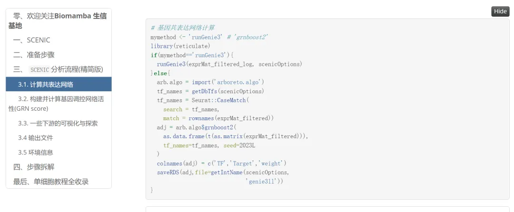
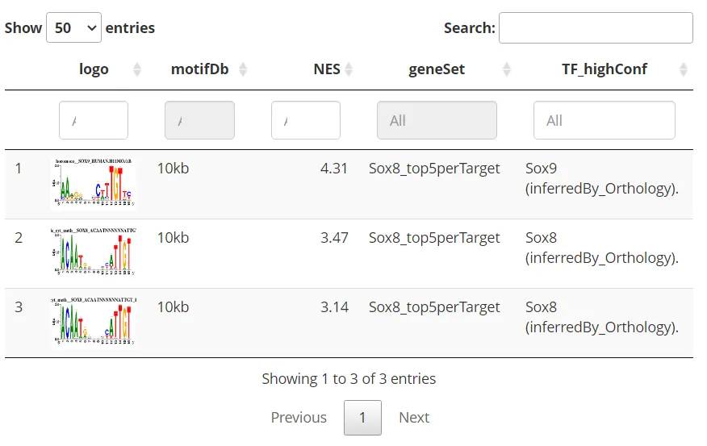
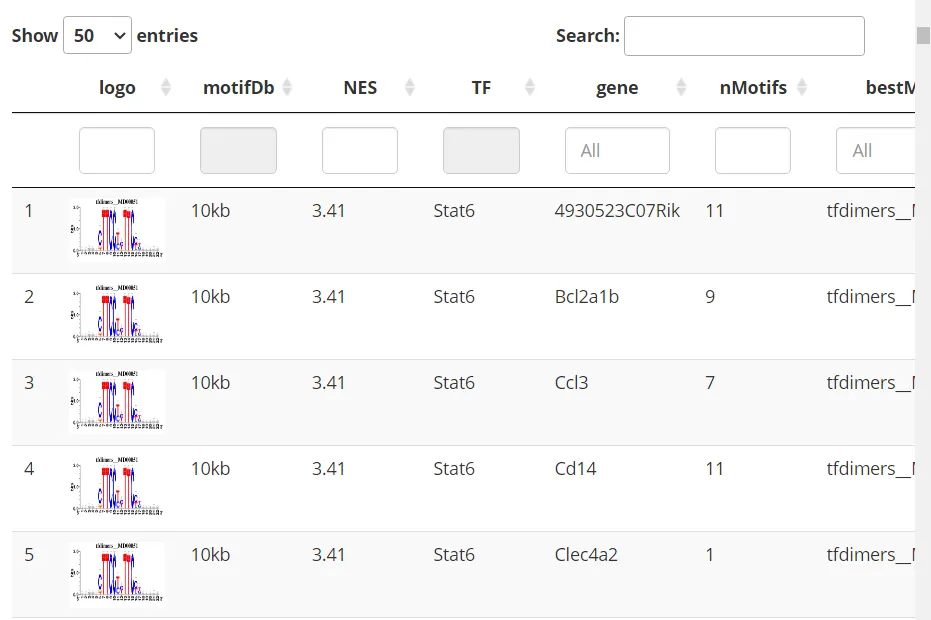
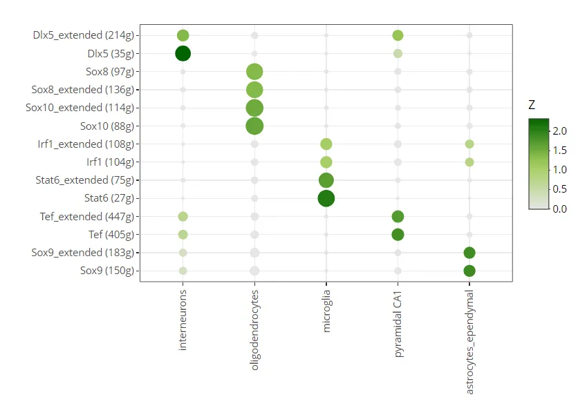

SCENIC单细胞转录因子预测|4.精简版流程
原文：https://mp.weixin.qq.com/s?__biz=MzAwMzIzOTk5OQ==&mid=2247501260&idx=1&sn=f1e2a165599e753e2959aad7c8a298cb&chksm=9b3cbc9cac4b358a9499654a2f95fa9010309ee4f408ef8b1f31ceb1a0f263ce22e8b511c430#rd 合集：单细胞教程全收录
写在前面 经过几节课的铺垫，SCENIC的运行流程其实非常简单，大部分内容均被SCENIC包高度封装，最核心的内容其实只有四行。本次教程文末快速地和大家一起过一遍流程。当然，输出文件的含义及利用方式还需要通过我们后续的详解视频来解析。学习手册与测试文件不断更新，可在文末解锁或联系客服微信Biomamba领取。学习手册：

当然更推荐大家去作者的Github学习：https://github.com/aertslab/SCENIC 视频教程
B站同步播出：
https://www.bilibili.com/video/BV1Mg4y1c7wU?p=4
图文教程
SCENIC的分析流程封装的较好，运行完整个流程无非也十几行代码(但是会产生大量的过程及结果文件)。
下面这个示例数据 真的算的很快 ，不过大家跑自己数据时可能会算上好几天 。
3.1. 计算共表达网络
genesKept <- geneFiltering(exprMat, scenicOptions)
## Maximum value in the expression matrix: 421
## Ratio of detected vs non-detected: 0.24
## Number of counts (in the dataset units) per gene:
## Min. 1st Qu. Median Mean 3rd Qu. Max.
## 0.0 17.0 48.0 146.8 137.0 5868.0
## Number of cells in which each gene is detected:
## Min. 1st Qu. Median Mean 3rd Qu. Max.
## 0.00 10.00 25.00 39.01 60.00 180.00
##
## Number of genes left after applying the following filters (sequential):
## 771 genes with counts per gene > 6
## 770 genes detected in more than 2 cells
## Using the column 'features' as feature index for the ranking database.
## 770 genes available in RcisTarget database
## Gene list saved in int/1.1_genesKept.Rds
exprMat_filtered <- exprMat[genesKept, ]
runCorrelation(exprMat_filtered, scenicOptions)
exprMat_filtered_log <- log2(exprMat_filtered+1)
# 基因共表达网络计算
mymethod <- 'runGenie3' # 'grnboost2'
library(reticulate)
if(mymethod=='runGenie3'){
runGenie3(exprMat_filtered_log, scenicOptions)
}else{
arb.algo = import('arboreto.algo')
tf_names = getDbTfs(scenicOptions)
tf_names = Seurat::CaseMatch(
search = tf_names,
match = rownames(exprMat_filtered))
adj = arb.algo$grnboost2(
as.data.frame(t(as.matrix(exprMat_filtered))),
tf_names=tf_names, seed=2023L
)
colnames(adj) = c('TF','Target','weight')
saveRDS(adj,file=getIntName(scenicOptions,
'genie3ll'))
}
## Using 8 TFs as potential regulators...
## Warning in runGenie3(exprMat_filtered_log, scenicOptions): Only 8 (0%) of the 1721 TFs in the database were found in the dataset. Do they use the same gene IDs?
## Running GENIE3 part 1
## Running GENIE3 part 10
## Running GENIE3 part 2
## Running GENIE3 part 3
## Running GENIE3 part 4
## Running GENIE3 part 5
## Running GENIE3 part 6
## Running GENIE3 part 7
## Running GENIE3 part 8
## Running GENIE3 part 9
## Finished running GENIE3.
3.2. 构建并计算基因调控网络活性(GRN score)
exprMat_log <- log2(exprMat+1)
scenicOptions@settings$dbs <- scenicOptions@settings$dbs["10kb"] # Toy run settings
scenicOptions <- runSCENIC_1_coexNetwork2modules(scenicOptions)
## 02:16 Creating TF modules
## Number of links between TFs and targets (weight>=0.001): 6139
## [,1]
## nTFs 8
## nTargets 770
## nGeneSets 47
## nLinks 17299
scenicOptions <- runSCENIC_2_createRegulons(scenicOptions, coexMethod=c("top5perTarget")) # Toy run settings
## 02:17 Step 2. Identifying regulons
##
## Attaching package: 'AUCell'
## The following object is masked from 'package:SCENIC':
##
## plotEmb_rgb
## Using the column 'features' as feature index for the ranking database.
## tfModulesSummary:
## [,1]
## top5perTarget 8
## 02:17 RcisTarget: Calculating AUC
## Using the column 'features' as feature index for the ranking database.
## Scoring database: [Source file: mm9-tss-centered-10kb-7species.mc9nr.feather]
## 02:17 RcisTarget: Adding motif annotation
## Using BiocParallel...
## Number of motifs in the initial enrichment: 867
## Number of motifs annotated to the matching TF: 126
## 02:17 RcisTarget: Pruning targets
## Using the column 'features' as feature index for the ranking database.
## [1] 22058
## 02:19 Number of motifs that support the regulons: 126
## Preview of motif enrichment saved as: output/Step2_MotifEnrichment_preview.html
scenicOptions <- runSCENIC_3_scoreCells(scenicOptions, exprMat_log)
## 02:19 Step 3. Analyzing the network activity in each individual cell
## Number of regulons to evaluate on cells: 14
## Biggest (non-extended) regulons:
## Tef (405g)
## Sox9 (150g)
## Irf1 (104g)
## Sox8 (97g)
## Sox10 (88g)
## Dlx5 (35g)
## Stat6 (27g)
## Quantiles for the number of genes detected by cell:
## (Non-detected genes are shuffled at the end of the ranking. Keep it in mind when choosing the threshold for calculating the AUC).
## min 1% 5% 10% 50% 100%
## 46.00 58.99 77.00 84.80 154.00 342.00
## Warning in .AUCell_calcAUC(geneSets = geneSets, rankings = rankings, nCores =
## nCores, : Using only the first 58.99 genes (aucMaxRank) to calculate the AUC.
## Using 8 cores with doMC.
## 02:19 Finished running AUCell.
## 02:19 Plotting heatmap...
## 02:19 Plotting t-SNEs...
## Warning in file.rename(plotsName, file.path(plotsLoc, plotsName)):
## cannot rename file 'Step3_RegulonActivity_tSNE_colByActivity' to
## 'output/Step3_RegulonActivity_tSNE_colByActivity', reason 'Directory not empty'
# 通过交互的shiny app选择判定二元矩阵的阈值，这里Rmarkdown不便展示，大家可以自行尝试一下
# aucellApp <- plotTsne_AUCellApp(scenicOptions, exprMat_log)
# savedSelections <- shiny::runApp(aucellApp)
# newThresholds <- savedSelections$thresholds
# scenicOptions@fileNames$int["aucell_thresholds",1] <- "int/newThresholds.Rds"
# saveRDS(newThresholds, file=getIntName(scenicOptions, "aucell_thresholds"))
scenicOptions <- runSCENIC_4_aucell_binarize(scenicOptions)#将AUCell矩阵二元化
## Binary regulon activity: 6 TF regulons x 197 cells.
## (11 regulons including 'extended' versions)
## 6 regulons are active in more than 1% (1.97) cells.
## Warning in AUCell_plotTSNE(tSNE = tSNE, exprMat = exprMat, cellsAUC =
## regulonAUC, : Expression plot was requested, but no expression matrix provided.
## Warning in file.rename(plotsName, file.path(plotsLoc, plotsName)):
## cannot rename file 'Step4_BinaryRegulonActivity_tSNE_colByActivity' to
## 'output/Step4_BinaryRegulonActivity_tSNE_colByActivity', reason 'Directory not
## empty'
3.3. 一些下游的可视化与探索
tsneAUC(scenicOptions, aucType="AUC") #利用AUCell score运行tsne
## [1] "int/tSNE_AUC_50pcs_30perpl.Rds"
# Export:
# saveRDS(cellInfo, file=getDatasetInfo(scenicOptions, "cellInfo")) # Temporary, to add to loom
if(!file.exists('output/scenic.loom')){export2loom(scenicOptions, exprMat)}
saveRDS(scenicOptions, file="int/scenicOptions.Rds")#保存结果
### Exploring output
# output下存放的scenic.loom文件可以用这个网站做交互式的可视化: http://scope.aertslab.org
# motif富集的相关信息在：
#output/Step2_MotifEnrichment_preview.html in
motifEnrichment_selfMotifs_wGenes <- loadInt(scenicOptions, "motifEnrichment_selfMotifs_wGenes")
tableSubset <- motifEnrichment_selfMotifs_wGenes[highlightedTFs=="Sox8"]#这样查看Sox8的信息
viewMotifs(tableSubset)

#查看motif和对应基因：
#output/Step2_regulonTargetsInfo.tsv
regulonTargetsInfo <- loadInt(scenicOptions, "regulonTargetsInfo")
tableSubset <- regulonTargetsInfo[TF=="Stat6" & highConfAnnot==TRUE]
viewMotifs(tableSubset)

#计算并展示每种细胞类型特异性的(celltype Cell-type specific regulators (RSS))，类似于拿RGN的活性来计算调控
regulonAUC <- loadInt(scenicOptions, "aucell_regulonAUC")
rss <- calcRSS(AUC=getAUC(regulonAUC), cellAnnotation=cellInfo[colnames(regulonAUC), "CellType"], )
rssPlot <- plotRSS(rss)
## Loading required package: grid
## ========================================
## ComplexHeatmap version 2.12.1
## Bioconductor page: http://bioconductor.org/packages/ComplexHeatmap/
## Github page: https://github.com/jokergoo/ComplexHeatmap
## Documentation: http://jokergoo.github.io/ComplexHeatmap-reference
##
## If you use it in published research, please cite either one:
## - Gu, Z. Complex heatmaps reveal patterns and correlations in multidimensional
## genomic data. Bioinformatics 2016.
## - Gu, Z. Complex Heatmap Visualization. iMeta 2022.
##
##
## The new InteractiveComplexHeatmap package can directly export static
## complex heatmaps into an interactive Shiny app with zero effort. Have a try!
##
## This message can be suppressed by:
## suppressPackageStartupMessages(library(ComplexHeatmap))
## ========================================
## Showing regulons and cell types with any RSS > 0.01 (dim: 14x5)
## Loading required package: ggplot2
plotly::ggplotly(rssPlot$plot)

3.4 输出文件
除了我们上面可视化展示出的结果，SCENIC运行时会自动在本地输出大量文件：
├── scenic.loom ├── Step2_MotifEnrichment_preview.html ├── Step2_MotifEnrichment.tsv ├── Step2_regulonTargetsInfo.tsv ├── Step3_RegulonActivity_heatmap ├── Step3_RegulonActivity_heatmap.pdf ├── Step3_RegulonActivity_tSNE_colByActivity │ ├── Dlx5 (35g)_AUC.png │ ├── Dlx5 (35g)_binaryAUC.png │ ├── Dlx5 (35g)_expression.png │ ├── Dlx5 (35g)_histogram.png │ ├── Dlx5_extended (214g)_AUC.png │ ├── Dlx5_extended (214g)_binaryAUC.png │ ├── Dlx5_extended (214g)_expression.png │ ├── Dlx5_extended (214g)_histogram.png │ ├── Irf1 (104g)_AUC.png │ ├── Irf1 (104g)_binaryAUC.png │ ├── Irf1 (104g)_expression.png │ ├── Irf1 (104g)_histogram.png │ ├── Irf1_extended (108g)_AUC.png │ ├── Irf1_extended (108g)_binaryAUC.png │ ├── Irf1_extended (108g)_expression.png │ ├── Irf1_extended (108g)_histogram.png │ ├── Sox10 (88g)_AUC.png │ ├── Sox10 (88g)_binaryAUC.png │ ├── Sox10 (88g)_expression.png │ ├── Sox10 (88g)_histogram.png │ ├── Sox10_extended (114g)_AUC.png │ ├── Sox10_extended (114g)_binaryAUC.png │ ├── Sox10_extended (114g)_expression.png │ ├── Sox10_extended (114g)_histogram.png │ ├── Sox8 (97g)_AUC.png │ ├── Sox8 (97g)_binaryAUC.png │ ├── Sox8 (97g)_expression.png │ ├── Sox8 (97g)_histogram.png │ ├── Sox8_extended (136g)_AUC.png │ ├── Sox8_extended (136g)_binaryAUC.png │ ├── Sox8_extended (136g)_expression.png │ ├── Sox8_extended (136g)_histogram.png │ ├── Sox9 (150g)_AUC.png │ ├── Sox9 (150g)_binaryAUC.png │ ├── Sox9 (150g)_expression.png │ ├── Sox9 (150g)_histogram.png │ ├── Sox9_extended (183g)_AUC.png │ ├── Sox9_extended (183g)_binaryAUC.png │ ├── Sox9_extended (183g)_expression.png │ ├── Sox9_extended (183g)_histogram.png │ ├── Stat6 (27g)_AUC.png │ ├── Stat6 (27g)_binaryAUC.png │ ├── Stat6 (27g)_expression.png │ ├── Stat6 (27g)_histogram.png │ ├── Stat6_extended (75g)_AUC.png │ ├── Stat6_extended (75g)_binaryAUC.png │ ├── Stat6_extended (75g)_expression.png │ ├── Stat6_extended (75g)_histogram.png │ ├── Tef (405g)_AUC.png │ ├── Tef (405g)_binaryAUC.png │ ├── Tef (405g)_expression.png │ ├── Tef (405g)_histogram.png │ ├── Tef_extended (447g)_AUC.png │ ├── Tef_extended (447g)_binaryAUC.png │ ├── Tef_extended (447g)_expression.png │ └── Tef_extended (447g)_histogram.png ├── Step3_RegulonActivity_tSNE_colByActivity.html ├── Step3_RegulonActivity_tSNE_colByCellProps.pdf ├── Step4_BinaryRegulonActivity_Heatmap_all.pdf ├── Step4_BinaryRegulonActivity_Heatmap_corr.pdf ├── Step4_BinaryRegulonActivity_Heatmap_onePercent.pdf ├── Step4_BinaryRegulonActivity_tSNE_colByActivity │ ├── Dlx5 (35g)_AUC.png │ ├── Dlx5 (35g)_binaryAUC.png │ ├── Dlx5 (35g)_histogram.png │ ├── Dlx5_extended (214g)_AUC.png │ ├── Dlx5_extended (214g)_binaryAUC.png │ ├── Dlx5_extended (214g)_histogram.png │ ├── Irf1 (104g)_AUC.png │ ├── Irf1 (104g)_binaryAUC.png │ ├── Irf1 (104g)_histogram.png │ ├── Irf1_extended (108g)_AUC.png │ ├── Irf1_extended (108g)_binaryAUC.png │ ├── Irf1_extended (108g)_histogram.png │ ├── Sox10 (88g)_AUC.png │ ├── Sox10 (88g)_binaryAUC.png │ ├── Sox10 (88g)_histogram.png │ ├── Sox10_extended (114g)_AUC.png │ ├── Sox10_extended (114g)_binaryAUC.png │ ├── Sox10_extended (114g)_histogram.png │ ├── Sox8 (97g)_AUC.png │ ├── Sox8 (97g)_binaryAUC.png │ ├── Sox8 (97g)_histogram.png │ ├── Sox8_extended (136g)_AUC.png │ ├── Sox8_extended (136g)_binaryAUC.png │ ├── Sox8_extended (136g)_histogram.png │ ├── Sox9 (150g)_AUC.png │ ├── Sox9 (150g)_binaryAUC.png │ ├── Sox9 (150g)_histogram.png │ ├── Sox9_extended (183g)_AUC.png │ ├── Sox9_extended (183g)_binaryAUC.png │ ├── Sox9_extended (183g)_histogram.png │ ├── Stat6 (27g)_AUC.png │ ├── Stat6 (27g)_binaryAUC.png │ ├── Stat6 (27g)_histogram.png │ ├── Stat6_extended (75g)_AUC.png │ ├── Stat6_extended (75g)_binaryAUC.png │ ├── Stat6_extended (75g)_histogram.png │ ├── Tef (405g)_AUC.png │ ├── Tef (405g)_binaryAUC.png │ ├── Tef (405g)_histogram.png │ ├── Tef_extended (447g)_AUC.png │ ├── Tef_extended (447g)_binaryAUC.png │ └── Tef_extended (447g)_histogram.png ├── Step4_BinaryRegulonActivity_tSNE_colByActivity.html ├── Step4_BinaryRegulonActivity_tSNE_colByAUC.pdf ├── Step4_BinaryRegulonActivity_tSNE_colByCellProps.pdf └── Step4_BoxplotActiveCellsRegulon.pdf
他们收录的信息为:
3.4.1 我人肉总结归纳的结果
-
“int/1.4_GENIE3_linkList.Rds” 基因共表达网络预测结果，记录了TF与TG间的weight
-
“int/2.1_tfModules_forMotifEnrichmet.Rds” list文件，保存的是经Motif富集检验得到的TF模块
-
“int/2.3_motifEnrichment.Rds” 经AUCell评分筛选后的motif富集分析结果
-
“int/2.4_motifEnrichment_selfMotifs_wGenes.Rds” 存放构建regulon包含的target gene信息
-
“output/Step2_MotifEnrichment.tsv” 2.4_motifEnrichment_selfMotifs_wGenes.Rds的txt版
-
“output/Step2_MotifEnrichment_preview.html” regulon的详细信息，html文件可存储motif的logo等信息
-
“int/2.5_regulonTargetsInfo.Rds” 最终的regulon详细信息
-
“output/Step2_regulonTargetsInfo.tsv” int/2.5_regulonTargetsInfo.Rd的txt版
-
“int/2.6_regulons_asGeneSet.Rds”
regulon信息，包含高/低置信度的regulon的标注
-
“int/3.1_regulons_forAUCell.Rds” 基因数大于10的regulon，regulon名称后标注了包含基因数量
-
“int/3.3_aucellRankings.Rds” AUCell ranking的结果
-
“int/3.2_aucellGenesStats.pdf” AUCell ranking的结果可视化图片
-
“int/3.4_regulonAUC.Rds” AUCell score计算结果
-
“int/3.5_AUCellThresholds.Rds” 存放在AUCell判断regulon on/off时的阈值
-
“int/3.5_AUCellThresholds_Info.tsv” AUCell 的阈值、细胞、基因数等信息记录
-
“output/Step3_RegulonActivity_heatmap” AUCell score 热图
-
“output/Step3_RegulonActivity_tSNE_colByCellProps.pdf” 利用regulon score的TSNE可视化结果
-
“int/4.1_binaryRegulonActivity.Rds” regulon的AUCell二元矩阵
-
“output/Step4_BinaryRegulonActivity_Heatmap_notCorr” regulon二元矩阵的相关性热图
-
“output/Step4_BinaryRegulonActivity_tSNE_colByCellProps.pdf” 二元矩阵TSNE降维可视化结果
3.4.2 ChatGPT的回答
-
scenic.loom SCENIC输出结果的主要文件，包含整个结果的基因表达数据、调控网络和调控子模块等信息。
-
Step2_MotifEnrichment_preview.html 展示了motif enrichment可视化结果的html文件。
-
Step2_MotifEnrichment.tsv motif enrichment表格文件，包含每个转录因子集合的motif分数。
-
Step2_regulonTargetsInfo.tsv 每个regulon涵盖的基因、Gene Ontology、Pathway与OmniPath分析的信息。
-
Step3_RegulonActivity_heatmap 各个Regulon在每个单元中的活动水平heatmap文件。